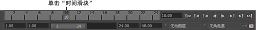

在通道盒中，可以为单个对象属性或为所有可设置关键帧的属性设置关键帧。
为一个属性设置关键帧
- 选择对象。
- 单击要设置关键帧的“时间滑块”(Time Slider)帧编号。

- 单击属性名称以选择它。
例如，单击“平移 X”(Translate X)。
- 键入属性的值，然后按 Enter 键。
例如，输入 10，然后按 Enter 键。
- 执行下列操作之一
- 在“通道盒”(Channel Box)中，选择“通道 > 为选定项设置关键帧”(Channels > Key Selected)。
或
- 在属性名称或文本框上单击鼠标右键并选择“为选定项设置关键帧”(Key Selected)。
这将为指定的对象属性值设置关键帧。
为所有属性设置关键帧
- 单击要设置关键帧的“时间滑块”(Time Slider)帧编号。
- 为“通道盒”(Channel Box)中的所需属性输入值。输入属性后按 Enter 键。
- 执行下列操作之一
- 在“通道盒”(Channel Box)中，选择“通道 > 为所有可设置关键帧的项设置关键帧”(Channels > Key All Keyable)。
或
- 在属性名称或文本框上单击鼠标右键，然后选择“为所有可设置关键帧的项设置关键帧”(Key All Keyable)。
这将为在“通道盒”(Channel Box)中显示的所有对象属性值设置关键帧。
您可以为两个或两个以上对象的相同属性值设置关键帧。选择对象，单击帧，在文本框中输入值，然后选择“通道 > 为选定项设置关键帧”(Channels > Key Selected)。
还可以为多个对象的多个属性值设置关键帧。按照上一段落中的说明操作，只是在键入数值条目之前通过按住 Ctrl 或 Shift 键并单击来选择多个属性文本框。